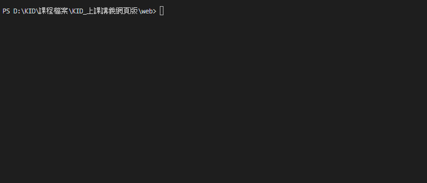
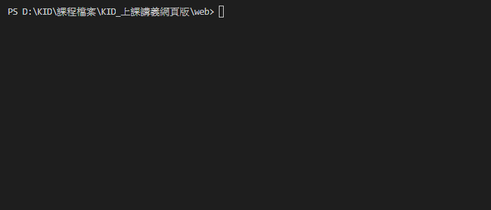
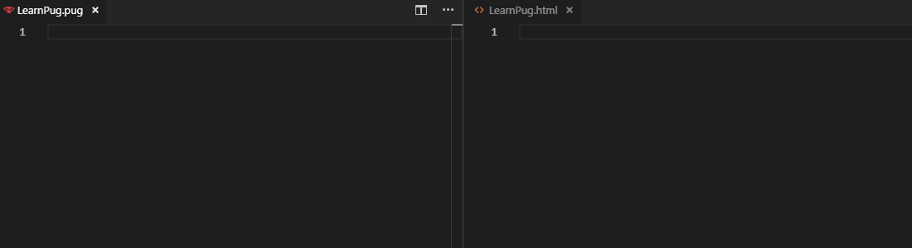
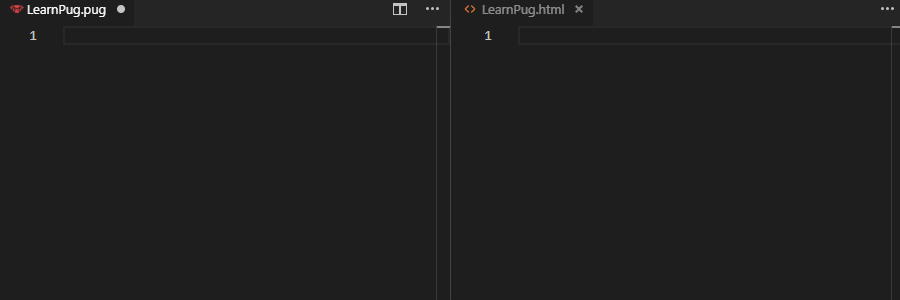
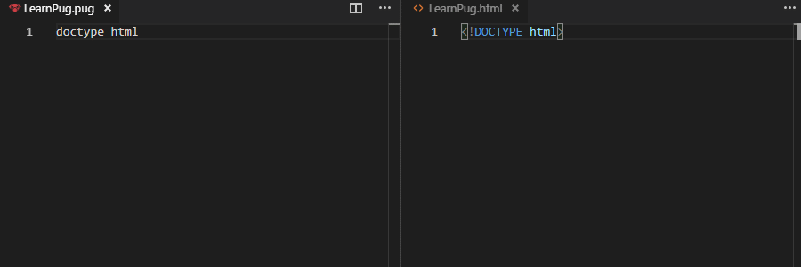
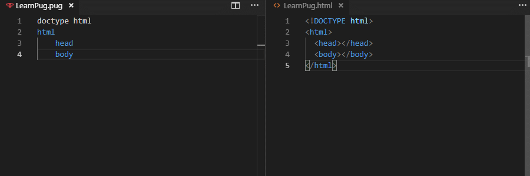
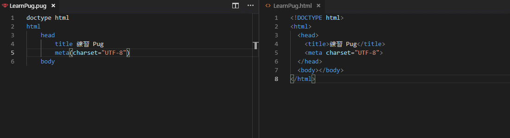
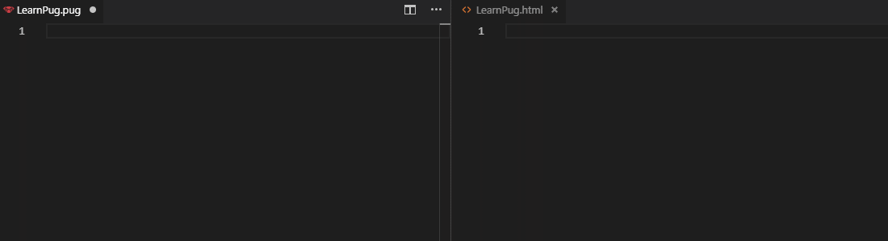
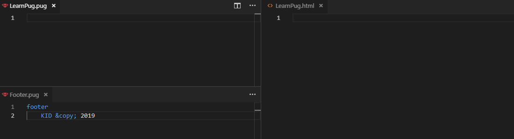

網頁設計 - HTML 模板語言 Pug
1. 認識 Pug
Pug為一套 HTML 模板語言，提供精簡 HTML的程式碼格式，原名為【Jade】。
2. Pug 流程
建立 Pug 檔案，利用模板撰寫 HTML
利用轉譯工具將 Pug 檔案轉回原本的 HTML
3. Pug 安裝流程
請先下載Node.js
安裝完成後回到 VS Code 開啟【終端機】( 快捷鍵 ctrl + ` )
安裝 Pug 輸入npm install pug -g

安裝 Pug Cli 輸入npm install pug-cli -g
測試安裝有沒有完成輸入pug -V(注意大小寫)
4. Pug 轉譯 HTML 語法
將 Pug 轉譯 為 HTML：pug ./ -o ./ -w -P
./ -o ./ 的意思為將 ./ 根目錄的 Pug 轉譯到 ./ 根目錄
-w 的意思為即時編譯
-P 的意思為排版

5. Pug 語法
5-1 註解
註解語法：// 註解
Pug 註解語法：//- 註解

5-2 使用 HTML 5
語法：doctype html

5-3 標籤與階層
標籤語法：標籤名稱
階層語法：縮排 Tab

5-4 內容與屬性
內容語法：標籤 空格 內容
屬性語法：標籤(屬性="值")

多重屬性：

5-5 多行內容與子標籤
多行內容語法：|內容
子標籤語法：#[子標籤]
5-6 變數
宣告變數語法：- var 變數名稱 = "變數內容";
使用變數語法：標籤=變數名稱
在內容使用變數語法：標籤 #{變數名稱}
使用包含標籤的變數語法：標籤!=變數名稱
在內容使用包含標籤的變數語法：標籤 !{變數名稱}
5-7 Mixin 方法
Mixin 語法mixin 混入名稱 內容
使用 Mixin 語法：+混入名稱
Mixin 參數語法mixin 混入名稱(參數) 內容
使用 Mixin 參數語法：+混入名稱(參數)

5-8 包含
包含語法include 檔案名稱.副檔名

練習
此單元介紹了 Pug ，請參考網頁設計 作業 - HTML 模板與營 Pug練習。